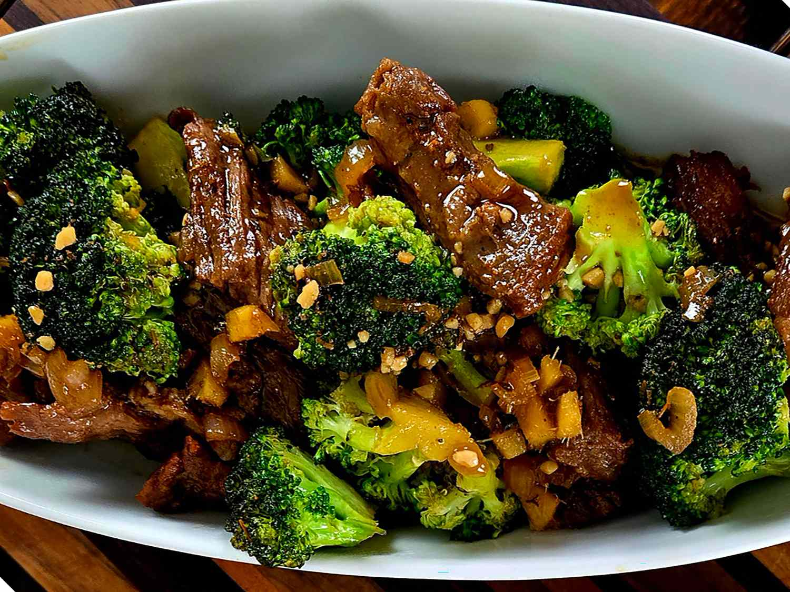

Steak & Broccoli Recipe

Description
Streak and broccoli is a flavorful dish featuring tender cuts of beef cooked to perfection and paired with fresh, crisp broccoli. It is a hearty and balanced meal that combines savory protein with nutritious vegetables.
Ingredients
- 2 tablespoon grapeseed oil or other cooking oil
- 1 pound ribeye steak, cut into bite-sized pieces
- salt and freshly ground black pepper to taste
- 1 cups soy sauce, or more as needed
- ½ cup honey
- ¼ cup sesame oil
- 4 garlic cloves, chopped
- 2 tablespoons fresh ginger, chopped
- 1 shallot, chopped
- 1 ½ cups fresh broccoli florets
- 2 green onions, chopped, for garnish
Steps
- Heat grapeseed oil in a cast iron skillet over medium heat. Season steak with salt and pepper.
- Add steak to skillet and cook for 1 to 2 minutes on each side. Remove from heat and set aside.
- Whisk soy sauce, honey, sesame oil, garlic, ginger, and shallot together in a bowl. Pour sauce into the skillet and bring to a gentle simmer. Add broccoli and cook for 2 minutes.
- Add steak back into the skillet; cook until hot, 1 to 2 minutes. Sprinkle with chopped green onions to serve.
Home